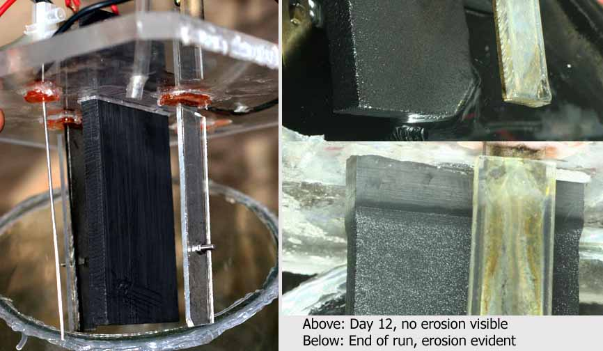
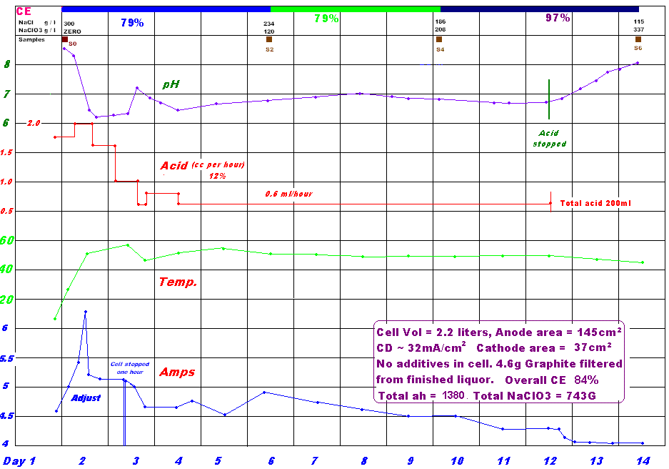
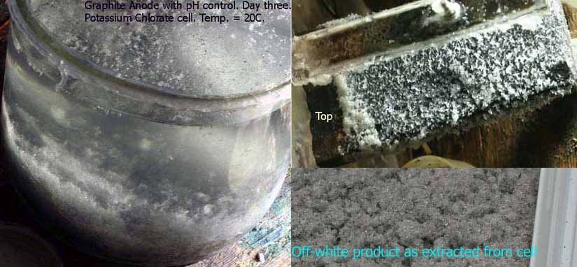

|
Graphite Anode under various conditions
|
|---|
| | |
Most Amateur Chlorate cells are run without any pH control. The pH of these cells increases from neutral to approx. 9 after a few hours of operation due to escape of Chlorine gas from the cell. When the pH gets high it is impossible for any more Chlorine to escape and the pH stabilizes. The high pH is
the main reason for most of the Graphite erosion. When acid is added to the cell continously or at fairly short time intervals the pH can be maintained in the region of 6.8. This is the 'sweet spot' for maximum current effeciency and gives low Anode erosion. The rate of addition for 12% HCl is in the region of 0.134ml per hour per amp when the cell has run for about two days. You need larger acid additions before this to keep pH at 7.0.
Sodium Chlorate cell No. 1
| Current efficiency |
|---|
| Days | % CE |
| 0 to 2 | 57 |
| 2 to 6 | 75 |
| 6 to 9 | 90 |
| 9 to 11 | 81 |
| 11 to 14 | 79 |
| 14 to 18 | 72 |
| 18 to 20 | 42 |
| 20 to 23 | 42 |
| Cell details |
|---|
| Temperature | 21°C |
| Volume | 2.2 liters |
| Anode area | 153 cm2 |
| Anode CD | 28 to 34 Amps/cm2 |
| Current | 4.2 to 5.2 amps |
| Cathode area | 37 cm2 |
| Total ah | 2484ah |
| Total Chlorate | 1278 grams |
| Overall CE | 78% |
A pH controlled Sodium Chlorate cell was set up to investigate the effect of pH contol on Anode erosion and CE.
The particulars are shown in the table.
There were four Titanium Cathodes, two flat and two wire. The backs of the flat Cathodes were covered with plastic to keep the current density on the Cathodes high so as to keep unwanted reductions (Chlorate and Hypochlorite being converted back to Chloride) at a minimum. No additives like Chromate etc were added to the cell. The cell was ran for a total of 23 days.
Acid (12% HCl) into cell was 1.8ml per hour for the first two days.
Then decreasing to 0.6 over the next 4 days and left in that region until stopped.
Sometimes I added some acid (few ml) manually if I though pH was getting away. Sometimes I turned acid off for some hours
if pH seemed to drift low. See the second Na Chlorate cell for more accurate acid addition figures.
Acid was stopped on day 18 as the pH seemed to stabilize at 6.8 without any additions of acid. This may be a usable indicator of when it is a good time to stop a Graphite Anode cell to avoid Anode erosion.
The Anode erosion is pictured below. 96% (in my estimation) of the erosion took place in the last four days of operation when Chloride when to 25 grams per liter (500 g/l Chlorate). Thus the absolute minimum Chloride concentration that must be observed to avoid Anode meltdown is 30g/l. Perchlorate was detected at the end of day 23 (cell was then stopped) at a Chloride concentration of 10g/l.
The electrolyte was boiled and the Graphite let settle for a few days. There was a strong yellow colour in the clear electrolyte above the Graphite sludge.

Sodium Chlorate cell No. 2
A second Na Chlorate cell was set up using the same Anode and cell. The acid addition was more controlled this time with a total of 200ml 12% HCl added to the cell.
The cell was insulated so that it ran at a higher temperature. Current into cell and CD on Anode/Cathodes was similar to first cell run. Once again the Anode erosion was very low with a total of 4.6 grams of Graphite sludge, equal to 6.2 grams Graphite sludge per KG Sodium Chlorate produced. This may not be the total Anode erosion story as some Graphite may be converted into Carbon Dioxide? When the cell run was complete, the cell contents was boiled and let settle for 3 days. most of the electrolyte was syphoned away which left approx. 170ml of electrolyte containing all the Graphite sludge. This was filtered through a 12cm filter paper. There was a yellow color in the clear electrolyte.
Details of the run are shown in the graph below.

It would appear that is is best to run the cell on past the 100 grams per liter Chloride point (to perhaps 50 or 40 grams per liter) as Anode erosion is OK and CE is still high. There would also be more Chlorate to harvest and it is easier to harvest it, as the concentration of Chlorate is higher and the concentration of Chloride lower.
There appears to be only a small %CE advantage in running the cell hot, as CE obtained in the first Na Chlorate cell run (which went all the way to low Chloride concentration) at 20°C was 78% which is close to the CE for cell No. 2(84%) at 50°C.
Potassium Chlorate cell run
The same cell as above was run with K Chloride. The cell was run for 7 days at an average of 4.5 amps and a temperature of 20°C. Total ah into cell was 842. K Chlorate extracted by freezing the cell contents was 422 grams giving a CE of 66%. The cell could of course be run for longer but the cell was filling up with solid K Chlorate and actually interfering with it's operation as the Anode was very close to the bottom of the cell. The Chlorate also gathered on the Anode throughout the run but this did not seem to effect the cells operation.
Acid additions were a bit erratic due to various external reason but when the cell was running steady the acid addition was similar to the NaCl cells above.
When the cell was first started the KCl solutions pH was measured at 6.4. Three ml of acid was added to the cell to give the acid a bit of a 'head start' which took the pH to 1.9 The rate of acid going into cell from the pump was 1.8 ml per hour (similar to start of other NaCl cells above). Two hours later, with terrible smell coming from the cell, pH was measured at 0.3. The acid was turned off for 4.5 hours when pH was measured to be 7.6. Twenty ml (large amount) of acid was added to cell to reduce pH to 7.4. The rate of acid being pumped in was increased to 3.3ml per hour (large amount). 13.5 hours later the pH was at 6.8 and more normal acid additions resumed.
It would appear that it is a very bad idea to add acid at the start of the cell run. Just set up pump and let the cell takes it's course.

|
Graphite in a pH controlled cell with high current density on Anode
|
|---|
A 2.2 litre cell with an EDM (Electro Discharge Machine) Graphite Anode was run and CE was calculated when Chloride was in the range of approx. 250g/l to 86g/l over a seven day period (approx. 4 day period followed by approx. 3 day period). The current density on the Anode was very high at 77mA per square cm. Temperature of cell was approx. 65°C (high for Graphite). Current into cell was 10 Ampers. Cathodes were small. pH was controlled. The Anode was weighed to ascertain weight loss.
| Erosion details |
Chloride level g/l
Sodium Chloride | Grams Graphite eroded per
KG Na Chlorate produced | %CE |
| 250 to 155 | 20 | 60% |
| 155 to 84 | 50 | 58% |
This erosion rate in this cell is approx. three times higher when compared to a pH controlled cell where CD on the Anode is approx. 34mA per square cm and temperature is lower at approx. 40°C, where you get an approx. wear rate of 6 grams Graphite per KG Sodium Chlorate produced. The CE is also down by about 18% in the above cell when compared to pH controlled cell at more normal current density on Anode.
The erosion rates for the cell conditions above are high when Chloride concentration starts to decrease somewhere below 155 grams per litre.
|
Graphite in a non pH controlled cell
|
|---|
A 2.2 litre cell with an EDM (Electro Discharge Machine) Graphite Anode was run and CE was calculated when Chloride was in the range of 300g/l to 20g/l over a 52 day period (approx. 29 day period followed by approx. 23 day period). The current density on the Anode was 30mA per square cm. Temperature of cell was approx. 33°C. Current into cell was 4 Amps. Cathodes were small. pH was not controlled. The Anode was weighed to ascertain weight loss.
The pH of the cell remained in the region of 8.2 which seemed low for a non-pH controlled cell. CE was very low at approx. 35%.
| Erosion details |
Chloride level g/l
Sodium Chloride | Grams Graphite eroded per
KG Na Chlorate produced | %CE |
| 300 to 133 | 52.4 | 36% |
| 133 to 19 | xx | 32% |
This erosion rate in this cell is approx. 8.5 times higher when compared to a pH controlled cell where CD on the Anode is approx. 34mA per square cm and temperature at approx. 40°C, where you get an approx. wear rate of 6 grams Graphite per KG Sodium Chlorate produced. The CE is also down alot, as expected. Perchlorate was detected in the cell at the end with a large wear rate on the Anode. The wear rate was not measured between 133 and 19 grams per litre Chloride because of the very large amount of wear on the Anode in the last 30 hours or so of operation.
The colour of the filtered electrolyte was a very Orange/Yellow colour, more coloured than in a cell with pH controll.
HIT THE BACK BUTTON ON YOUR BROWSER
BACK TO TOP